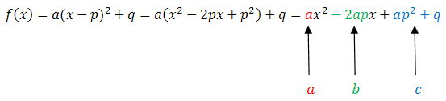
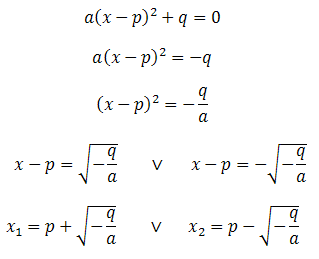
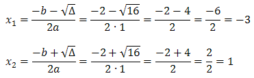
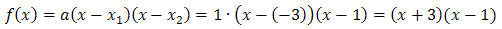
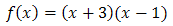

Teraz pokażemy jak zamienić funkcję kwadratową
zapisaną w postaci kanonicznej: \[f(x)=a(x-p)^2+q\] na postać ogólną oraz iloczynową.
Metoda zamiany postaci kanonicznej na ogólną
Żeby zamienić wzór funkcji kwadratowej na
postać ogólną, to wystarczy podnieść nawias do kwadratu i uprościć wyrażenie:  Możemy zatem zapisać wzory na współczynniki liczbowe \(b\) i
\(c\): \[\begin{split} &b=-2ap\\[6pt] &c=ap^2+q \end{split}\] Teraz gdy znamy współczynniki liczbowe
\(a\), \(b\) i \(c\), to możemy zapisać wzór funkcji w postaci ogólnej: \[f(x)=ax^2+bx+c\]
W praktyce przekształcanie wzoru funkcji kwadratowej na postać ogólną jest
bardzo proste i nie wymaga pamiętania żadnych wzorów. Przekonasz się o tym na poniższych
przykładach. Wcześniej jednak omówimy metodę zamieniania postaci kanonicznej na iloczynową.
Metoda zamiany postaci kanonicznej na iloczynową
Aby zamienić wzór funkcji z postaci kanonicznej na postać iloczynową, to
wystarczy obliczyć miejsca zerowe \(x_1\) i \(x_2\). Żeby to zrobić, to warto najpierw zamienić
wzór funkcji na postać ogólną, a następnie obliczyć miejsca zerowe korzystając z delty i wzorów
na \(x_1\) oraz \(x_2\).
Alternatywną metodą jest obliczenie miejsc zerowych wprost z postaci
kanonicznej w następujący sposób:  Oczywiście powyższy rachunek możemy przeprowadzić pod
warunkiem, że liczba \(-\frac{q}{a}\) jest dodatnia (bo nie wolno wyciągać pierwiastka z liczby
ujemnej). W przeciwnym przypadku miejsca zerowe nie istnieją.
Przekształć wzór funkcji \(f(x) = (x + 1)^2 - 4\) na postać ogólną i
iloczynową.
Zaczynamy od wyznaczenia postaci ogólnej. W tym celu podnosimy nawias do kwadratu i
upraszczamy wyrażenie:
\[f(x) = (x + 1)^2 - 4 = x^2 + 2x + 1 - 4 =
x^2 + 2x - 3\]
Czyli postać ogólna jest następująca: \[f(x) = x^2 + 2x - 3\] Teraz
wyznaczymy postać iloczynową. Musimy w tym celu wyliczyć miejsca zerowe \(x_1\) i \(x_2\).
Wypiszmy na początku współczynniki liczbowe \(a\), \(b\) i \(c\) wyznaczonej przed chwilą
postaci ogólnej:
\(a = 1\)
\(b = 2\)
\(c = -3\)
Obliczymy
deltę:
\[\Delta = b^2 - 4ac = 2^2 - 4\cdot 1\cdot (-3) = 4 + 12 =
16\]
Teraz obliczamy miejsca zerowe \(x_1\) i \(x_2\) korzystając z poznanych wzorów:
 Wyliczone wartości podstawiamy do wzoru
na postać iloczynową:  Zatem ostatecznie postać iloczynowa
funkcji kwadratowej jest następująca: 